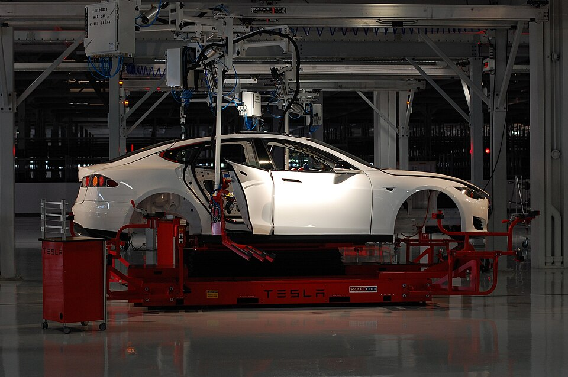

公司特稿 Ⅰ · TESLA
从一张 650 万美元的支票，到一场万亿级的赌约
2004 年，他把一张 650 万美元的个人支票，压在一家做电动跑车的初创公司桌上。二十年后，这家公司的股东批准了一份以万亿美元计的薪酬合约。

- A 轮个人投入
- $6.5M
- IPO 募资
- ≈$2.26亿
- 全球车企市值第一
- 2020.07
- 首家万亿市值车企
- $1T
- 薪酬方案上限
- ≈$1万亿
2004 年，电动车还是行业里的边缘笑话。他领投 Tesla A 轮 750 万美元（个人出 650 万）并出任董事长。这张支票背后的判断逻辑，他沿用至今：先问物理上是否可行，再谈商业上是否划算。
随后是 2008：金融危机压顶，公司账上见底。他亲自接任 CEO 操盘，并把个人最后的资金押了进去。Tesla 活过了那一年，一年半后登陆资本市场——1956 年福特之后第一家上市的美国车企，募资约 2.26 亿美元。
之后的爬升相当陡峭：2020 年 7 月市值超越丰田登顶全球车企；2021 年 10 月成为历史上第一家市值突破 1 万亿美元的车企。电动化从此不再是「补贴生意」，而成了「资本共识」。
2025 年 11 月，股东以约 75% 的支持率批准了他的绩效薪酬方案：里程碑包括把市值做到 8.5 万亿美元，全部达成价值约 1 万亿美元。把一个人的激励与这种量级的目标绑定，在公司治理史上没有先例。